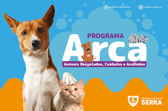

Sobre Nós
Programa ARCA (Animais Resgatados, Cuidados e Acolhidos) é uma iniciativa da Prefeitura da Serra, por meio da Secretaria de Meio Ambiente (Semma), voltada para o bem-estar animal e o controle populacional de cães e gatos no municipio.
O projeto se destaca principalmente pela oferta constante de vagas para castração gratuita, priorizando áreas de maior vulnerabilidade, alta densidade animal e incidencia de zoonoses (doenças transmitidas entre animais e pessoas).

Nossos Resultados
Graças a um investimento continua, o programa atingiu a impressionante marca de 15 mil castrações gratuitas realizadas, beneficiando diretamente familias de baixa renda e protetores independentes em mais de 40 bairros do municipio. Alem disso, as ações de resgate e tratamento médico-veterinário de urgência integradas ao projeto já retiraram das ruas e recuperaram mais de 2.500 animais, conseguindo encaminitiar cerca de 85% deles para novos lares por meio de feiras de adoção consciente, Esse trabalo gerou um impacto direto na saúde pública, com estudos municipais apontando uma redução de 40% na abandono de ninhadas e uma queda drástica nos casos de zoonoses nas regiões prioritárias. Atuaimente, todo o agendamento e o acompanhamento dos serviços são feitos de forma digital pelo portal oficial do programa, garantindo total transparencia e agridade para a população sertana.